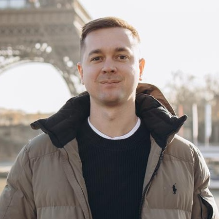
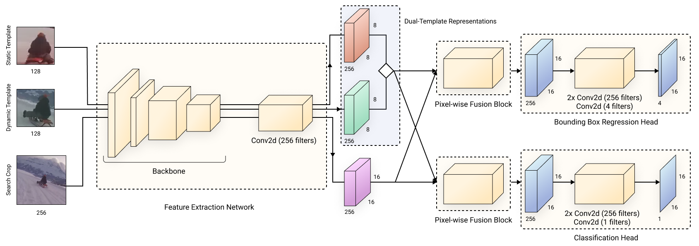
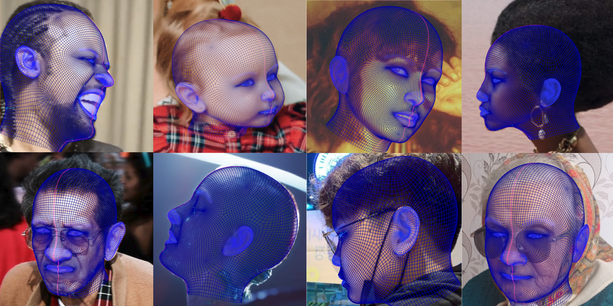
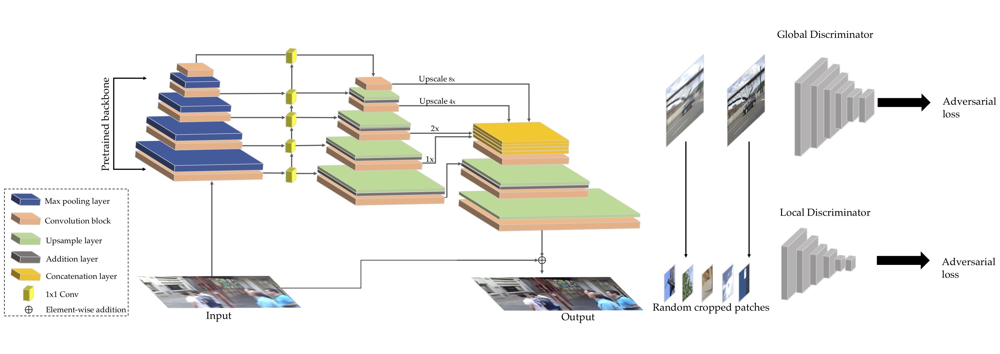
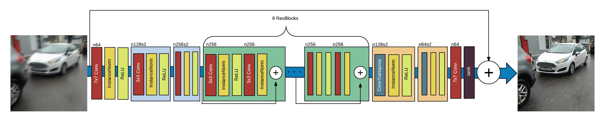

Orest Kupyn
PhD Researcher at the Visual Geometry Group, Oxford & Google Research
Specializing in generative models, synthetic data generation, and 3D/video generation. Combined frontier research (4,000+ citations, publications at CVPR, ICLR, ECCV, ICCV; 2.6k★ open-source tools) with 10+ years of engineering experience — including founding a regional ML office, building research teams from scratch, and deploying computer vision systems serving millions of users at production scale.

About
I'm a DPhil student at the Visual Geometry Group, University of Oxford, supervised by Christian Rupprecht. I am part of the ELLIS Industry PhD program — a joint PhD between Oxford and Google Research, with industrial supervision by Federico Tombari.
My research spans generative models and computer vision. I started with GANs for image restoration (DeblurGAN, 2.6k★), built production-scale 3D head reconstruction, tracking for real-time video editing systems at PiñataFarms — work that led to open-source datasets and benchmarks at CVPR and ECCV. My current focus is on synthetic data generation with diffusion models, geometric consistency in video generation, and simulation-ready, geometrically accurate 3D scene generation.
Before my PhD, I spent over a decade in industry. As a founding engineer at PiñataFarms (backed by Index Ventures & Founders Fund), I opened the company's regional engineering office, built a 10+ person ML research team from scratch, and deployed computer vision systems serving millions of users at production scale.
The thread across my work is making generative models useful — whether that meant shipping GANs to mobile devices, building datasets that close the domain gap, or aligning video diffusion models with epipolar geometry. I care about research that ships, and my industry background shapes how I think about problems.
News
Publications
All papers on Scholar →





